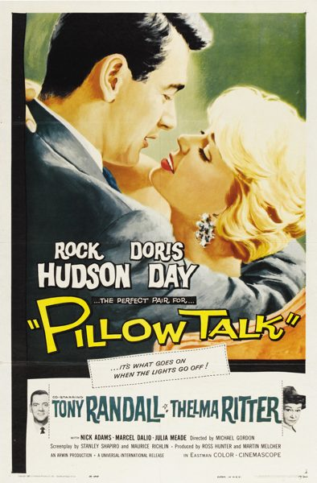

Pillow Talk
Starring: Rock Hudson, Doris Day, Tony Randall
Director: Michael Gordon
Writer: Russell Rouse, Maurice Richlin, Stanley Shapiro
Producer: Ross Hunter, Martin Melcher
Pillow Talk is a 1959 American romantic comedy film in CinemaScope directed by Michael Gordon and starring Rock Hudson and Doris Day. The supporting cast features Tony Randall, Thelma Ritter, Nick Adams, Allen Jenkins, Marcel Dalio and Lee Patrick. The film was written by Russell Rouse, Maurice Richlin, Stanley Shapiro, and Clarence Greene.
Trivia
- Won the Academy Award for Best Writing, Original Screenplay.
- Also nominated for: Academy Award for Best Supporting Actress; Academy Award for Best Actress; Academy Award for Best Art Direction, Color; Academy Award for Best Original Dramatic or Comedy Score.
- The film's script was turned down and bought back by RKO a few times in the late 1940s and early 1950s until Martin Melcher (the husband of Doris Day at the time) and his Arwin Productions label bought the script and took it to Universal.
- The original ending planned for the film was to have Jan, after using the trick switch to lock the door and then smiling at Brad, shut off the light and say "All apartments look alike in the dark." This open-ending was changed in the final film to show that Jan and Brad got married and are now expecting a baby.
- Director Michael Gordon had been blacklisted and was working on Broadway.
Previous Showings
4 Runs • 4 Festivals
All runs on record (4):
- December 5 - 8, 1998Romantic Comedy Seriesw/ Lover Come Back
- August 2 - 3, 2001Summer 2001w/ Calamity Jane
- September 8 - 11, 2006Summer 2006, featuring Judy Garland and Mickey Rooneyw/ Breakfast at Tiffany's
- April 26 - 28, 2019Doris Day Festivalw/ Send Me No Flowers